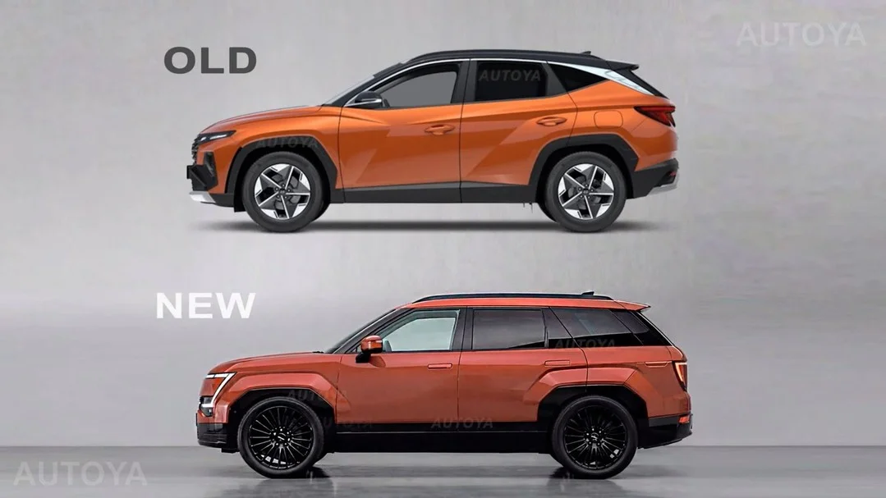
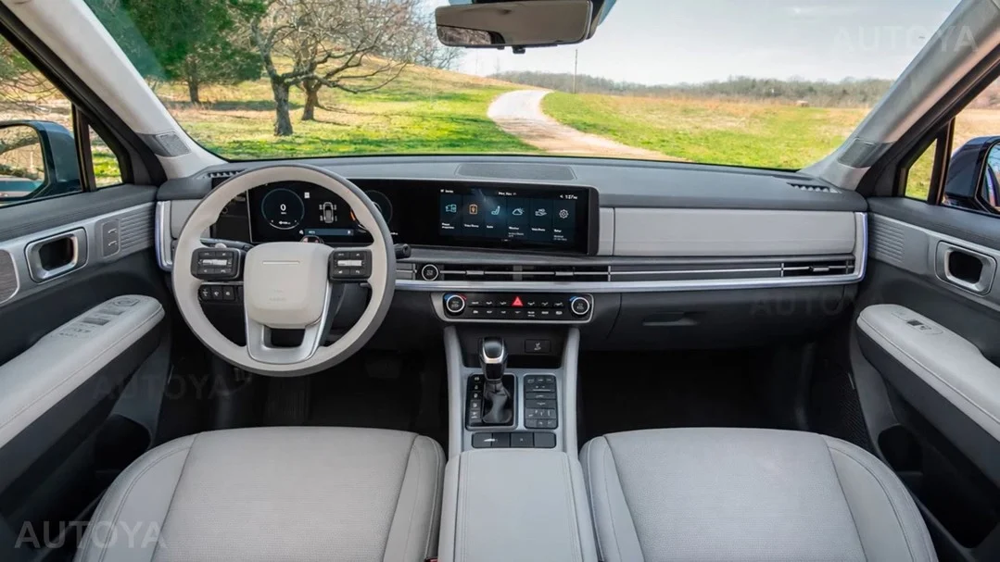

▲ 유튜브 채널 '오토야 인테리어(AutoYa Interior)'가 스파이샷을 토대로 제작한 5세대 투싼 완전변경 예상도. 현대차 공식 이미지가 아니다 ⓒ AutoYa Interior (유튜브)
현대차 투싼이 2020년 4세대(NX4) 출시 이후 약 7년 만에 5세대(내부 코드명 NX5) 완전변경을 준비 중이라는 소식이 이어지고 있습니다. 아직 현대차의 공식 발표는 없지만, 위장막을 두른 개발 차량이 잇따라 포착되면서 개발이 상당 부분 진행됐다는 관측이 나오고 있고, 이를 근거로 한 예상도까지 공개돼 화제를 모으고 있습니다. 공식 정보가 아니라는 점을 전제로, 지금까지 나온 루머와 예상 내용을 정리했습니다.
1. 예상 디자인 — 싼타페처럼 각진 실루엣

▲ 기존 4세대(위)와 예상되는 5세대(아래) 측면 비교 렌더링. 더 박스형에 가까운 실루엣이 특징이다 ⓒ AutoYa Interior (유튜브)
렌더링에 따르면 5세대 투싼은 기존보다 더 박스형에 가까운 차체 실루엣을 채택할 것으로 예상됩니다. 신형 싼타페처럼 각을 살린 차체 라인과 더 세워진 루프라인, 사각형 휠 아치가 적용돼 실내 공간을 넓히는 방향으로 설계됐다는 관측입니다. 픽셀 스타일의 라이트바와 분리형 헤드램프 조합도 예상 디자인 요소로 거론됩니다.
해외 매체 더드라이브(The Drive)에 따르면 이 렌더링은 유튜브 채널 '오토야 인테리어'가 스파이샷과 개발 정보를 토대로 제작한 비공식 창작물입니다. 실제 양산형 디자인은 이와 다르게 나올 가능성이 얼마든지 있습니다.
2. 실내 & 파워트레인 — 그래도 물리버튼은 남기나

▲ 디지털 계기판과 중앙 디스플레이를 갖추면서도 물리 버튼·다이얼을 유지한 것으로 예상되는 실내 렌더링 ⓒ AutoYa Interior (유튜브)
실내는 현세대의 운전자 중심 레이아웃을 계승하면서, 디지털 계기판과 센터 디스플레이를 완전 터치스크린 일체형이 아닌 물리 버튼·다이얼과 병행하는 구성으로 예상됩니다. 국내 매체 보도로는 16:9 비율의 대형 파노라믹 디스플레이와 현대차의 신규 인포테인먼트 '플레오스', 12.3인치 커브드 디스플레이와 전자식 변속 칼럼, OTA 업데이트를 지원하는 ccNC 인포테인먼트가 적용될 것이라는 전망도 나옵니다.
다만 파워트레인 관련 예상은 매체별로 결이 다릅니다. 한쪽에서는 디젤과 가솔린을 완전히 없애고 하이브리드·PHEV로만 운영될 것이라는 전망을 내놓은 반면, 다른 쪽에서는 1.6L 가솔린 터보와 1.6L 하이브리드는 유지하되 2.0L 디젤만 단종 가능성이 있다는 다소 결이 다른 전망을 제기하고 있습니다. 하이브리드 사양에는 신형 'e-모션 드라이브' 기술이 적용될 것이라는 관측도 있지만, 역시 공식 확인된 내용은 아닙니다.
3. 예상 일정 & 가격 — 스포티지와의 경쟁 구도

▲ 현재 판매 중인 4세대(NX4) 투싼 실물 사진. 5세대는 이 모델을 대체할 것으로 예상된다 ⓒ Damian B Oh, Wikimedia Commons (CC BY 4.0)
업계 예상을 취합하면, 2026년 10월 티저 공개, 12월 사전계약, 2027년 1월 정식 출시 순으로 일정이 흘러갈 가능성이 거론됩니다. 가격 전망 역시 상승 쪽에 무게가 실리는데, 1.6L 가솔린 터보는 기존보다 250만~300만 원 오른 약 3,100만 원부터, 1.6L 하이브리드는 400만~500만 원 오른 약 3,700만 원부터 시작될 것이라는 예상이 나옵니다. 물론 이 역시 확정된 가격표가 아닌 매체 추정치입니다.
예상 디자인과 사양을 종합하면, 5세대 투싼은 형제 차종인 스포티지의 '터프함'과 대비되는 '정제된 하이테크' 이미지를 앞세워 소프트웨어 경험과 하이브리드 안정성으로 승부할 것이라는 전망이 많습니다. 다만 지금까지 나온 내용은 모두 스파이샷과 렌더링에 기반한 추측일 뿐, 현대차의 공식 티저나 발표가 나오기 전까지는 참고 수준으로만 받아들이는 것이 좋습니다.